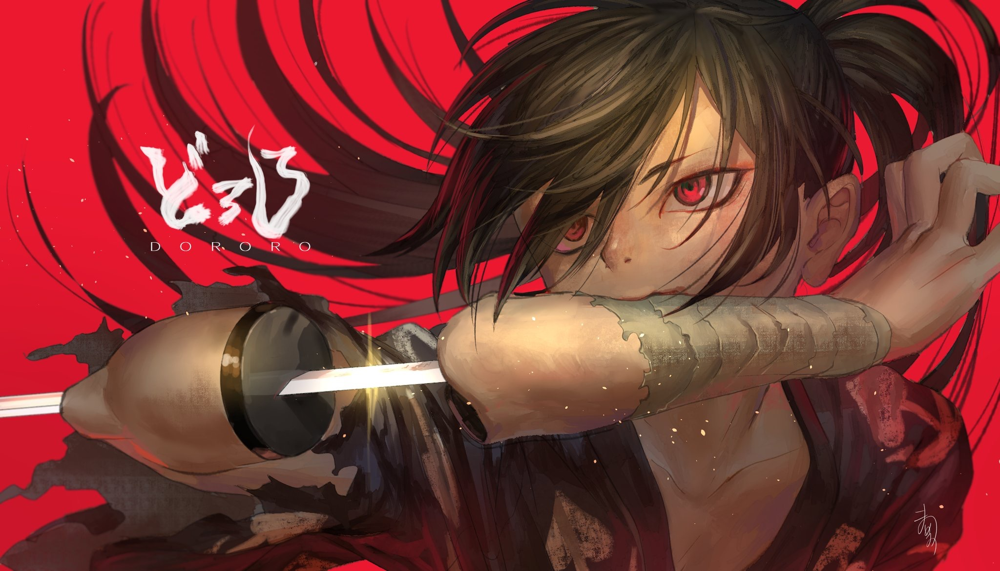

Dororo es un anime basado en un manga de Osamu Tezuka sobre Hyakkimaru,
un joven que nació despojado de 48 partes de su cuerpo como un pacto de su padre,
un ambicioso señor feudal, con 48 demonios a cambio de la prosperidad de su tierra.
Con la ayuda de un doctor, Hyakkimaru es reconstruido con prótesis de madera
y, al crecer, emprende un viaje para recuperar sus partes perdidas, venciendo a los demonios uno por uno.
En su aventura se une Dororo, un joven ladrón que, a través de la experiencia, le enseña sobre la humanidad y los sentimientos.


Características
- Basado en un manga de Osamu Tezuka.
- Escenarios del Japón feudal.
- Batallas contra demonios.
n
Lo que más me gusta
- La relación entre Hyakkimaru y Dororo.
- La animación.
- La historia.
Para más información visita: Ver más sobre Dororo aquí
Ver más sobre Dororo aquí Ver más sobre Dororo aquí